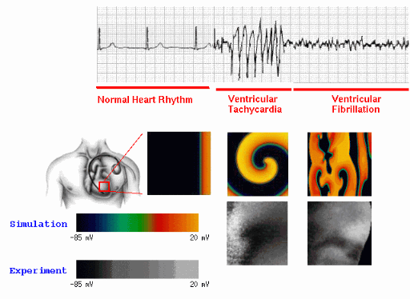

研究目的

●相位奇異點(phase singularities, PS)與心律不整機制研究：
PS是心臟電生理光學映射（optical mapping）分析中一個核心的
幾何特徵，對理解心律不整（如心房顫動(AF)、心室顫動(VF)、心
室頻脈(VT)）的基礎機制具有重要意義。 Phase Singularity揭示
了心臟電活動中的旋轉波（spiral wave 或 reentry wave）核心
位置，在心律不整中，旋轉波常作為驅動異常心律的主要機制，因
此PS的定位追蹤可以為心律不整的動態行為提供關鍵洞察。
●PS在醫療上的應用：
○異常節點的標定與電燒：
PS的位置標定是心律不整心肌電燒治療的重要指導信息。PS對應於驅動心律不整的關鍵節點（如旋轉波核心或異常自動化焦點），PS的精準定位與追蹤對於心肌電燒術治療能提高成功率。
○藥物與干預效果評估：
不同藥物或干預措施（如電刺激）的效果可以通過其對 PS 動態的影響進行量化。例如，抑制旋轉波分裂或減少 PS 數量可以被視為藥物抑制心律不整的有效指標。
●與PS定位追蹤之相關論文：
Lebert J et al. “Rotor Localization and Phase Mapping of Cardiac Excitation Waves Using Deep Neural Networks. Front Physiol.” 2021 Dec 17;12:782176.
<說明>
AI模型: Encoder-Decoder架構之CNN
輸入: 心臟電位活動的圖像資料
訓練的答案(ground truth): 數學circular integral計算出的PS位置+Hilbert transform計算所得的相位訊號(phase signal)
輸出: 相位圖(phase map)+PS位置
●目前文獻“尚未有直接使用深度學習物件偵測模型(如YOLO)以及YOLOv8結合物件追蹤模型DeepSORT來偵測與追蹤定位PS的研究”，而YOLO 模型偵測PS目標的快速與簡易使用，在實際的應用中將優於以上現有論文的方法，這引起我們使用YOLO系列模型來定位追蹤PS的動機。
|